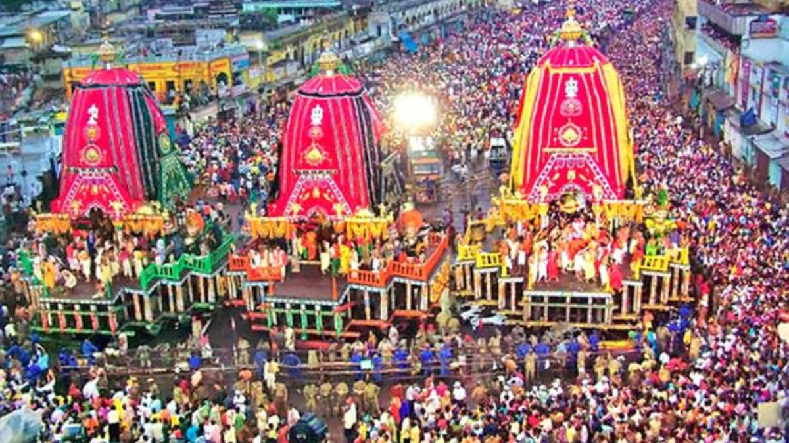
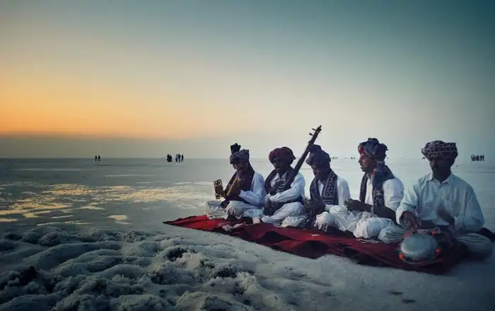
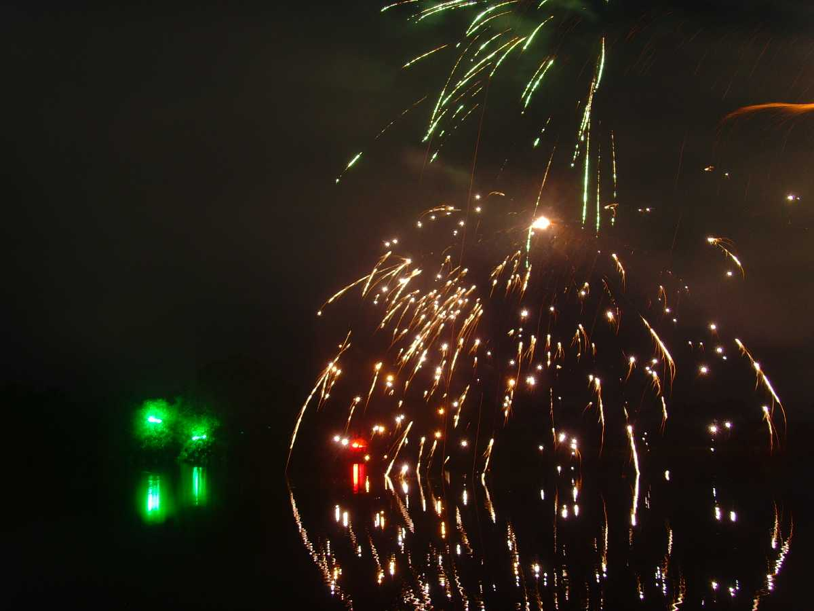
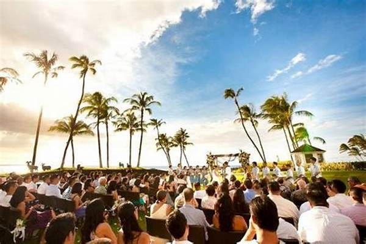
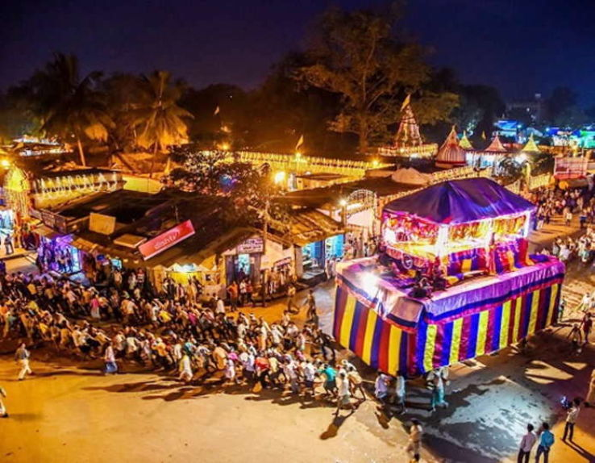

Gugarat:

Rath Yatra is one of the most awaited festivals in Gujarat and other parts of India, and it takes place majorly in four places including Jagannath in Ahmedabad (Gujarat). This sacred annual celebration’s main highlight is the procession that is led by an ornate chariot.
The procession begins prior the Pahind Vidhi (cleaning the route for chariot), performed by the CM of Gujarat. The chariot and procession then make their way through different corners of the city.

This is among the main festivals in Gujarat. Rhythmic strums of ravanahatha, Gujarati men with legendary mustaches and pagris, and the sparkling white sand – the desert of Rann dons a festive avatar right when autumn is at its peak.
Gujarat’s fascinating heritage takes the forefront at the Kutch festival of Gujarat. It is that much-awaited time of the year when people, regardless of where they live, come over for an extravagant experience of the main festival of Gujarat.
Goa:

Goa is known for its famously lavish New Year's celebrations. The best part, of course, is the night of New Year when the whole party-state stops their thumping Bass and Trance filled music just to count down with the clock to strike the midnight 12. Right at 12, the festivities reach the sky with the fireworks, Champaigns and Music booming in the air with the wooing crowd jumping to every beat.

Despite being the smallest state in the country, Goa has an unending variety of rich culinary, culture and heritage. The state doesn't fall behind to showcase these diverse talents. The Goa Food & Culture Festival makes sure that the whole world looks in awe. With the 5-day festival becoming a platform for experienced as well as young and talented chefs to show off their culinary skills to a crowd that includes an audience from all over the world. Musicians from the whole country perform for this international audience. What else could make someone happy if not food and entertainment? This fiesta takes place every year in Panjim in April.
chhattisgarh

Bastar lokotsav is a festival celebrated in Chhattisgarh that involves the biggest celebration of the tribals of the state, especially, the tribes of Bastar. The festival promotes biodiversity, brotherhood and involves multi-layered celebrations. Feasts, folk dances, plays and other forms of performing arts take place as a part of this lokotsav festival in Bastar.